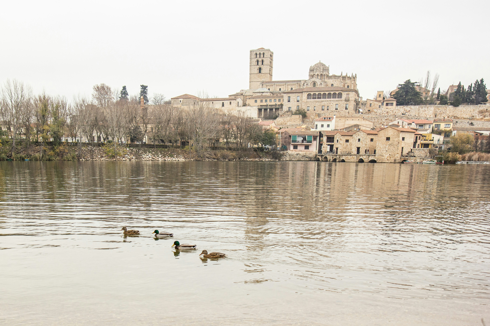
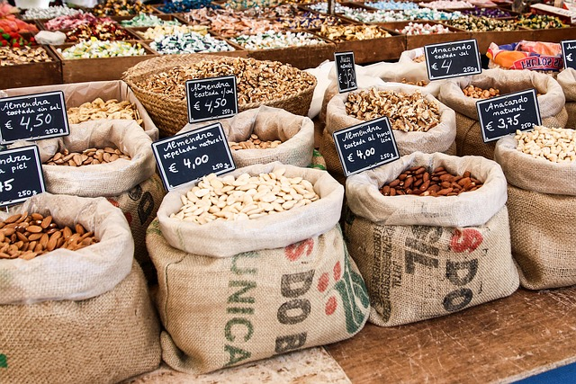

Un territorio que se apaga
En gran parte de España, el silencio ha ido ganando terreno. Donde antes había escuelas llenas, bares ruidosos y plazas con vida, hoy quedan ventanas cerradas y calles que se vacían al caer la tarde.
Zamora es uno de esos lugares donde el tiempo parece avanzar más rápido que la gente. Cada año pierde habitantes, servicios y oportunidades. No es un fenómeno nuevo, pero sí uno que empieza a marcar el futuro de toda una provincia.
En esta historia te propongo recorrer ese camino: entender cómo hemos llegado hasta aquí, qué está pasando ahora y, sobre todo, qué podría pasar si decidimos actuar… o si no hacemos algo.
Desplázate para activar el mapa →
Midiendo el pulso de la despoblación
Para entender la despoblación no basta con mirar cuánta gente vive en un sitio. Hay señales que cuentan mucho más.
La densidad, por ejemplo, nos dice si un territorio está lleno de vida o si empieza a quedarse hueco. El envejecimiento muestra si hay relevo generacional o si la población se apoya cada vez más en personas mayores. Y la migración revela si la gente llega… o si se marcha.
Este indicador reúne esas señales en un solo vistazo. No es un número frío: es una forma de medir el pulso de la provincia. Y como verás, en muchos municipios ese pulso late cada vez más despacio.

Así hemos llegado hasta aquí
Si miramos atrás, la historia de Zamora es la historia de muchas zonas rurales de España.
En los años 60, los pueblos estaban llenos de vida. La agricultura y la ganadería sostenían a miles de familias, y la mayoría de la población vivía en el territorio. Pero poco a poco, el trabajo se concentró en las ciudades, y con él se fueron los jóvenes.
Como si el territorio perdiera brillo, los puntos se van desaturando y bajando en el gráfico a medida que su población cae con el paso del tiempo. Menos nacimientos, más envejecimiento, más casas vacías.
Este recorrido animado muestra esa transformación. No es solo una línea que baja: es la historia de cómo un territorio cambió en apenas dos generaciones.
¿Y ahora qué?
El futuro no está escrito. Y eso es una buena noticia.
En 2040, Zamora podría seguir perdiendo población… o podría empezar a recuperarla. Todo depende de las decisiones que tomemos hoy.
Aquí puedes explorar tres caminos posibles:
- Sin intervención: la tendencia continúa y muchos municipios seguirán vaciándose.
- Escenario moderado: se aplican políticas de apoyo, mejora de servicios y conectividad. La caída se frena.
- Escenario agresivo: se apuesta fuerte por la repoblación, la digitalización y la economía rural. Algunos municipios vuelven a crecer.
No son predicciones exactas, sino una forma de imaginar qué podría pasar si cambiamos —o no cambiamos— el rumbo.
El futuro está en nuestras manos.
La despoblación no es un destino inevitable. Es una tendencia que podemos cambiar si entendemos sus causas y actuamos con decisión.
Cada política, cada inversión y cada proyecto puede marcar la diferencia entre un territorio que se apaga y otro que vuelve a encenderse.
Tú también puedes opinar. ¿Qué camino crees que funcionaría mejor?
Ver resultados de la encuesta
Cargando resultados...